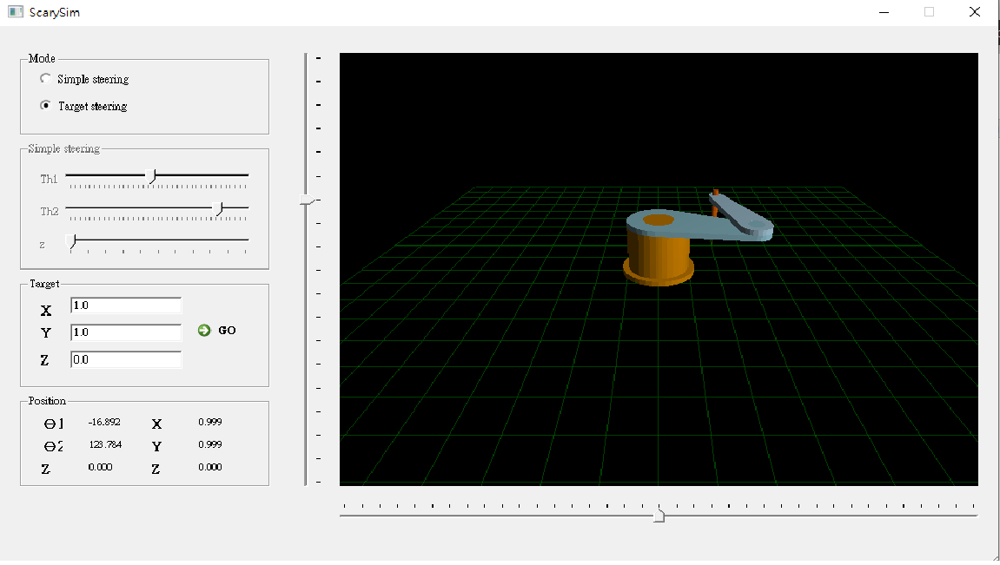

結果 <<
Previous Next >> w10_block_ui
每周進度
W1
建立IPV6連線,下載cadlab_network_setup.zip,並在被封鎖網路前執行1_ipv6_network_setup.bat啟動檔,如果成功將不會再跳出網路封鎖訊息。內建會自行將網路轉至IPV6並設定Proxy
利用學校Email或於學校網路下載NX1980_cd2022.7zNX可攜式
W2
利用cmsimd子模組建立cd2022倉儲
利用grp_2022.py程式使用2a.txt表單跑出分組名單
w7
利用隨身程式系統編譯 https://github.com/mdecourse/scarysim 中的 SCARA robot 模擬系統. 完成此 Qt C++ 程式碼的編譯與操作後, 接著請完成 CoppeliaSim 範例中 MTB robot 所進行的 Pick and Place demo.
完成結果

結果 <<
Previous Next >> w10_block_ui